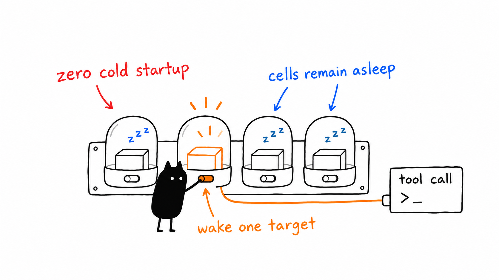

On-demand runtime and canonical discovery
Referensi
docs/on-demand-runtime.md
Isi dalam bahasa sumber. Unduh sumber · Semua dokumen

Runtime 1.2.0 implements §10.3: no cell starts during runtime startup or tools/list. The first call starts only its target; concurrent calls share that startup. Cells already started retain the existing crash/timeout supervisor. Standalone MCP servers are unchanged, all eight profiles remain supported, and the runtime/installer default is minimal when no profile is selected.
The same endpoint owns profile-aware agent instructions. prompts/list exposes hela-profile-bootstrap, prompts/get renders it from the selected profile, and resources/read serves hela://profile/context. Clients should consume that runtime context instead of copying a static persona prompt or deploying each cell as a separate MCP server.
One inventory, generated schemas and counts
config/inventory.json remains the source of cell paths, revisions, versions, environment declarations, and conditional tool features. config/profiles.json selects membership. Config generation, doctor, version verification, integration, and profile tests use the same inventory loader/path resolution.
The generated config/tool-catalog.json contains actual standalone MCP schemas, revision/version metadata, verified build digests, and feature variants. It is a derived artifact, not another server registry. Mitosis currently has four LLM/agent feature combinations; other cells have one schema variant. The generator enables registration flags only for discovery and never invokes model-backed tools.
Build outputs can differ between machines even at one source revision. Multiple digests are retained together only if fresh probes return identical schemas for every declared variant. New or changed conditional tool registration must declare its switches under the cell's toolFeatures; other relevant settings belong in its env list. Configuration changes require a new runtime instance.
Run from the ecosystem checkout after building the selected cells and runtime:
npm run catalog:generate -- --profile dev-workspace
npm run catalog:check -- --profile dev-workspace
./setup.sh doctor --profile dev-workspace --runtime
npm run test:profiles -- --profile dev-workspace
The installer refreshes selected-profile catalog entries when installing the runtime. Partial installations do not need unrelated hardware cells. An installation with all cells can omit the profile argument to generate/check all entries.
The same generator writes profile-count documentation and docs/site/data/tool-counts.json. Counts include hela.pipe and the optional agent alias; they are feature-dependent ranges, not fixed totals copied into each client configuration.
Cache isolation and stale metadata
The format-2 private cache separates ecosystem roots, profiles, and namespace modes. Per-cell fingerprints cover declared and actual revisions, build contents, effective feature flags, and declared environment settings. Cache files contain fingerprints and schemas only, not environment values. Atomic publication prevents partial reads.
Legacy, corrupt, and mismatched cache entries are ignored. A valid generated catalog supplies cold schemas without child processes. Missing/stale catalog entries are not advertised. Unknown calls do not scan other cells. Explicit hela.pipe routing can start an uncatalogued named cell and learn its schemas; regenerating the catalog restores full cold discovery.
Doctor validates selected paths/builds, real isolated MCP handshakes, package/inventory/snapshot versions and revisions, and—when --runtime is requested—exact catalog/tool agreement with zero discovery spawns. Hardware checks are limited to the selected profile and remain separate from MCP readiness. API-key checks report presence, never values or assumed provider readiness.
Verification scope
- 32/32 runtime regressions pass on x86_64 Linux and native ARM, covering timeout recovery, lazy startup, 24 concurrent first calls, cache invalidation, profile/root/namespace switching, legacy/corrupt caches, explicit bootstrap, and shutdown. 41 fixture PIDs per run were verified reaped.
- All eight profiles pass 16/16 namespace-off/on discovery/schema/routing checks. Discovery starts zero cells; only the safe Genome/Nucleus probes start those cells. Cold discovery, cold first-call, and warm-call durations are recorded in JSON output without asserting machine-independent latency limits.
- The 80 client-configuration combinations, four probe regressions, and four canonical inventory regressions pass. Default standalone integration now excludes the multiplexing runtime from collision comparisons.
- Eight additional runtime discovery checks cover all four Mitosis feature combinations in both namespace modes, without invoking model tools or starting cells. Doctor reports READY with cold catalog parity for all eight profiles.
- Reproducible Nix packages use Node 22.23.4 and pinned/fixed-output inputs on both Linux architectures. Runtime versions derive from package metadata.
These checks do not authenticate GUI ACP sessions, reconcile live vault conflicts, exercise Android/Blender hardware, invoke model providers, or complete deferred endpoint security. Lappy retains its ten-server roster; servy retains its eight-cell dev-workspace selection.
Verified servy rollout
Runtime source 9c92dbf5612db43fe80f1680ba4af97c4b5ea9b0 and ecosystem source release 1c47ca1c202c6a2acea79d7c6fdac5a19ef3c0bf are deployed. Final-source Nix outputs are:
- x86_64-linux:
/nix/store/r15rmywrswf01nj2xrvx753p1fh4f6rh-hela-runtime-1.2.0. - aarch64-linux:
/nix/store/bhm781bld50yi9brmy2mn74p1ybzdzcy-hela-runtime-1.2.0.
The ARM package is rooted under /home/ubuntu/.local/state/hela/deployments/todo103-psnzx8x4/runtime. Promotion fast-forwarded clean source checkouts, retained the old build/drop-in, and took fresh integrity-checked online backups of three databases plus a vault archive. Existing profile, environment, host, port, and security settings were preserved; only the selected runtime executable changed.
Local and public HTTP initialize/discovery report runtime 1.2.0, 236 unique tools, all three Genome mission tools, and no hardware-only tools. Both discovery checks left the service with zero child cells. A safe terminal_session_list call started only Nucleus; Genome did not start. Observed Nucleus calls were approximately 471 ms cold and 13 ms warm in this one run, including HTTP/MCP overhead—not a portable benchmark.
Deployed doctor reports READY, catalog parity is exact, revision checks pass, and the GC root is verified. All previous HTTP-service PIDs exited. All 633 pre-rollout conflict archive files retained their hashes. No database file was restored/replaced, and unrelated client-owned runtimes and the legacy PM2 gateway were not stopped.
The rollout directory contains manifest.json, http-verification.json, doctor.log, versions.log, catalog.log, backup/, rollback-dist/, and the package GC root. Native committed-source staging/test evidence remains under /home/ubuntu/.local/state/hela/staging/todo103-release-ah25pauz/; local test/measurement logs are under /var/tmp/scratch/opencode/todo103/. Authenticated ACP, deliberate external-client reloads, gateway consumer review, vault reconciliation, and deferred security remain separate.